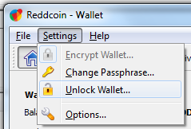

by J.F. Hotte | Aug 19, 2014 | Headlines, Weekly Report |
 Markets are completely crazy!!! I think this has been a hard week of trading for many people. We were lucky enough, our NXT were secured, we invested in Crypti who did really well in this small Altcoin crisis.
Markets are completely crazy!!! I think this has been a hard week of trading for many people. We were lucky enough, our NXT were secured, we invested in Crypti who did really well in this small Altcoin crisis.
Too many altcoins? Is it possible that the winners takes all scenario occurs with Bitcoin and maybe 3-4 other coins bringing home the honors, volume and market cap?
I believe in the next 12 months, this might happen.
So you need to be aware and careful with the coins your purchasing.
The market is so crazy (in part with a devaluation of Bitcoin) this might be due to the IPOs, Ethereum and so many coins who raised high volume lately.
My recommendations for now is to be very careful with your risk management, do not trade more than 20% of your BTC.
It’s very hard to make picks in a bearish market, I will mainly use my intuition in this market (fundamentals, the coins I believe in) with a little bit of TA’s.
Here my opening orders at 4:14 PM :
trading board not found
Last Week’s Recommendations
Next Week’s Recommendations
 By J.F. Hotte
By J.F. HotteJ.F is the trading desk coordinator and project manager at Cryptomen. B.B.A at the University of Québec in Montreal. Interested in technology, web, stocks and forex. Currently trading cryptos for a living.
Tip the writers! 13VxRGh6tmn7pSZoi16XXTWtjA1zT1YrNe
13VxRGh6tmn7pSZoi16XXTWtjA1zT1YrNe
Received this month: BTC 0.0264
Add a Tooltip Text
by Special Collaboration | Aug 11, 2014 | Bitcoin 2.0 & Metacoins |
Warning: file_get_contents(https://blockchain.info/q/addressbalance/13VxRGh6tmn7pSZoi16XXTWtjA1zT1YrNe): failed to open stream: HTTP request failed! HTTP/1.1 500 Internal Server Error
in /var/www/html/wp-content/themes/divi-child/functions.php on line 405
 Bitcoin is meant to change every stratosphere we know of. The financial sector is just the beginning.
Bitcoin is meant to change every stratosphere we know of. The financial sector is just the beginning.
What if we came up with an idea to change the scope of political/government power by way of a complete individual autonomous system guided by a public ledger? As Jeffrey Tucker stated a few months ago, “the existence of the blockchain on a distributed network ultimately means the death of the Nation State.” Let’s see what this entails shall we?
Distributed consensus is analogous to biological genetic process. The Bitcoin network has bio-chemical-mechanical characteristics, much like organic molecules or a cellular sort of machinery whose job is to tear down and assemble molecules and replicate everywhere.
As long as they are nourished with machinery and fed with incoming transactions, the miners/agents assemble transactions into symmetrically replicated structures representing the state of affairs until the end of time like DNA produces proteins.
The new idea is, abstractly, a distributed state consensus process – the process calculates, evaluates and records an agreement replicated among the agents in society. Every person in the globe represents an individual node. Algorithms measure our variations.
Agents produce a broadly replicated record of the state of affairs, and they all agree on the facts resolved on the record. In the Bitcoin system the record is a ledger that contains facts and evaluations of those facts.
This is a self organizing system that is permitted to thrive because it reduces the energy in the system due to lower cost connections among people conducting transactions.
Literally everyone can be their own autonomous state and even be represented ‘voluntarily’ by an organization, or many organizations. Imagine the Bitcoin network operating, right now around the world: miners building data structures, traders gaming the markets, merchants and consumers, or just anyone exchanging value and ownership and in the background, developers building software, etc. Literally every facet of society can be covered. Property contracts, deals with your neighbors, trusts, wills, dispute resolution, restitution cases, basically: everything.
What is new is that money, or more broadly resource statefulness, is exchanged without middlemen. Instead the machinery to execute a market transaction is simply a program abiding by a protocol. The machinery is a new efficiency for transfer of stateful value and ownership. (Note that credit transactions are no longer inherently tied to the process.)
This market function has bifurcated or split off and become its own module in the social system. Banks work with both debit and credit, and they record statefulness in a debit/credit ledger. But the debit part doesn’t need the banks. And so the Bitcoin network pre-empts that market function, leaving the credit function to the banks, essentially re-modularizing the money system. And probably, eventually the credit function will also be pre-empted from the banking system, political system.
The system becomes a distributed consensus of individual human action one node at a time recorded on a never-ending public ledger. Every point of infrastructure can be covered. This surely sounds beautiful to me.
“Economic freedom is the greatest tool of liberation.” ~ Daniel Hawkins
There are those so-called “libertarians” that would love to ignite a violent revolution. Not remembering history in the least or the lessons of the past. That every violent revolution has led to what we have today: tyranny. They even scoff at the idea that Bitcoins can’t help to end the state. I laugh at you. Not only will Bitcoins end the nation-state but it will change the consensus of every paradigm in the globe. Why? Because it represents every individual, one node at a time. Human Action, baby! Read it. It’s a book by a guy named Mises.
By J Redman
Tip the writers! 13VxRGh6tmn7pSZoi16XXTWtjA1zT1YrNe
13VxRGh6tmn7pSZoi16XXTWtjA1zT1YrNe
Received this month: BTC 0.0000
Add a Tooltip Text
by Special Collaboration | Aug 11, 2014 | Bitcoin 2.0 & Metacoins |
 Today at least 98% of government issued currencies are scriptural money, also known as “digital money”. This digital money is kept in commercial banks accounts or networks, and flows as digits in the database on a bank’s computer servers. This is not dramatic in itself, because banking services like (paying bills online, transferring money, credit card…) are very useful services. The issue is that, in order for individuals to have access to those basic banking services they need to deal with financial institutions that will act as trustees. This is where the moral hazard lies as we will explore in this article.
Today at least 98% of government issued currencies are scriptural money, also known as “digital money”. This digital money is kept in commercial banks accounts or networks, and flows as digits in the database on a bank’s computer servers. This is not dramatic in itself, because banking services like (paying bills online, transferring money, credit card…) are very useful services. The issue is that, in order for individuals to have access to those basic banking services they need to deal with financial institutions that will act as trustees. This is where the moral hazard lies as we will explore in this article.
“Where did the fiat money come from? It came – and this is the most important single thing to know about modern banking – it came out of thin air.” –Murray Rothbard
The Moral Hazard With Banks
When you deposit cheques or cash in your bank account you are actually lending this money to the bank, and legally you don’t own it anymore. The bank is the new owner of this money. However, when you process a transaction, let’s say you buy an Item online; it is your bank that is processing the transaction for you, and in exchange for this service the bank needs to access your personal information. Each time you use the banking services you are giving up your identity and your anonymity. The current financial system, forces us to deal with third parties (financial institution) each time we wish to access to “basic banking services”. Those financial institutions have formed a cartel that made the cost of banking services extremely high. Which fees will continue to go as stricter rules are applied to the banking system. Customers must pay fees to banks every time they use the banking network to transfer money. The result of this system is that more than 90% of the world population doesn’t have access to a credit card or even a bank account.
A Bitcoin Banking System
On the other hand, a Bitcoin banking system would work much more differently. Bitcoin’s are distributed, peer-to-peer digital currency that functions without the intermediate of any central authority. The concept was introduced in a 2008 paper by a pseudonymous developer known as “Satoshi Nakamoto”. Bitcoin’s value has increased to unimaginable levels in recent months, which verifies the popularity and demand for a competing currency by the consumer.
Bitcoins are created through the ‘’mining process’’. Mining means providing computer power to solve complex algorithms. The reward for the miners is a block of 25 Bitcoins. The total number of Bitcoins that will be issued is limited to 21million Bitcoin; there is currently 12 million Bitcoin in circulation (already created). Whereas there the US government reported statistic M2 (M1 supply, plus all of the money held in money market funds, savings accounts, and certificates of deposits (CDs) under $100,000.) in August 2013 was about $10.77 trillion [source: Federal Reserve].
Bitcoin, are stored in a personal wallet, a Bitcoin wallet is a digital portfolio that has a public key and a private key. The public key is your Bitcoin address or identifier. The private key is a secret number that allows Bitcoin to be spent. Everyone has the possibility to own more than 100 million different addresses.
All Bitcoin transaction are visible and are recorded in a public ledger (a ledger in accounting, is a book that you cannot edit once you have written in it) called the Blockchain. This ledger is updated by the Bitcoin users themselves, without any third party or fiduciary. It is completely decentralized, peer to peer system. The Blockchain is like an asset register that permits to see and track all Bitcoins in circulation.
The ownership of Bitcoin remains totally anonymous through cryptography. One of the early Bitcoin developer said: “Even though the transactions are public, the individuals tied to the transactions are anonymous. This is similar to how the stock exchange makes stock values public without disclosing individual owners.”
Our current financial system is the complete opposite, the banks act as third parties each time we use their network to make transactions. The ledgers are not public or updated by the users themselves, otherwise they are private, controlled and managed by the banks. The current financial system is entirely centralized and controlled by banks.
Thanks to the state’s privilege of being the unique providers of banking services. Banks have made the cost of transactions extremely expensive. Since bitcoins are a decentralized peer to peer currency; there is no third party that we have to pay, in order to access the banking network. Therefore, Bitcoin transactions are almost or totally free. The equivalent of 6 million dollars worth of Bitcoin got transferred from a wallet in the US to a wallet in the UK. The fees for this transaction were 6 cents. PayPal for exactly the same transaction would have charged more than 100000$.
Many experts think that the impact of Bitcoin and crypto currencies in general, on the current financial system, will be very similar to the impact of MP3 introduction and the peer to peer media sharing networks on the music industry. Bitcoin is already catching the attention of governments and banks. Countries like China and Russia encourage the usage and the acceptance of Bitcoin, as a method to avoid the US dollar petro system and its chronic inflation. Let’s face it, our system is broken and we need a new one, I am just suggesting that bitcoins could replace or bring in competition to our current monetary system. The end result would most likely bring more power and freedom to the middle class and a higher standard of living by removing unnecessary costs.
Do you think Bitcoins has the power to destroy and rebuild our current financial system?
By Slimus Bouzid
Tip the writers! 13VxRGh6tmn7pSZoi16XXTWtjA1zT1YrNe
13VxRGh6tmn7pSZoi16XXTWtjA1zT1YrNe
Received this month: BTC 0.0264
Add a Tooltip Text
by J.F. Hotte | Aug 11, 2014 | Bitcoin 2.0 & Metacoins, Headlines |
Dear alt coin traders,
It seems like you still keep your alt coins on exchanges! We all remember what happened to Mt. Gox and now BTER with NXT.. hasn’t that taught us a lesson? After all, investors and traders are still willing to take risks. What we need to do is to convince all traders to withdraw their crypto-currencies from exchanges and store them in a safer places like: encrypted wallets, paper wallets, COLD wallets.
Here are some good easy ways to protect your coins

Run your own wallet client (usually QT) and encrypt it!! For short term safety, putting a wallet on a device where you control the keys is a safe bet. For longer and safer storage, you can configure your wallets on a USB stick and save a copy in your safe deposit box. And always backup your wallet.dat but be weary of using cloud storage.
Paper wallet generators are an easy way to create a secure storage system for your coins. However, paper may not be durable enough for long term storage. You can configure key pair records in your favorite password management system. Password Box also gives you the ability to share your passwords so you can give access to your legacy manager or your lawyer so your crypto-currency holdings are not forgotten or lost in case you pass away.

This last bit of advice may be the best way to keep crypto-currency in a completely invisible way. You can create a mnemonic Bitcoin wallet from a phrase or a list of words. It’s called a brain wallet and most wallet generators have this option. But be careful, if you use a simple password or an obvious phrase that has been published before, you will lose your coins within 24 hours!
I understand it’s so much easier to trade by keeping your altcoins on exchanges. When you see an opportunity, all you need to do is click on a few buttons and you are ready to buy a new coin. Unfortunately, exchanges are not a safe enough yet to store coins long term. July 14th, there was a successful attack on Mintpal exchange. 30% of Vericoin were stolen because Mintpal did not store VRC in cold wallets (approximately USD$2,000,000 worth of coins).
Hopefully, these attacks will serve as wakeup call. Attacks like these provide a big incentive to the exchanges to improve their security. Even though this situation seems “awkward”, hackers are good for the crypto world. I believe the only way altcoins and bitcoin will really go mainstream is with the participation of exchanges security. The day people will feel “safe” keeping money in crypto exchanges, will be the day mainstream will adopt it, just like they do leaving fortunes in bank account accessible by internet solutions.
When people tell me about the Mt. Gox story, and that they are not investing in Bitcoin because it’s not safe, I simply tell them that they are doing the same thing, right now, with the banking system. Banking websites are being hacked as you read these words. The Associated Press reported in July that the bank account of a California escrow firm, Efficient Services Escrow Group, was hacked in December 2012 and January 2013, with three payments totaling $1.5 million wired to accounts in China and Russia. Only $432,215 was recovered, and the company shut down.Online banking frauds are rising year after year. Dailymail.co.uk reported that in 2012 banks intern frauds increased by 28% in UK. Billions of dollars are stolen in fraud hacks, phishing sites every year since banks started using internet solutions. The French bank Societe Generale lost £3.7 billion in one of the biggest corporate banking frauds of all time. In 2002 John Rusnak, a currency trader at US bank Allfirst, based in Baltimore, Maryland, and then a subsidy of Allied Irish Bank, pleaded guilty to fraud amounting to $691 million (£345 million).
I think the bitcoin network, exchanges and blockchain are still better trading tools than bank internet solutions (with a very small budget compared to what the banks are paying for security). In a couple of years with similar budgets, crypto-currencies exchanges will be much safer. Even though it’s theoretically a better model, there’s a lot of room for improvement. We need to make alt coins exchanges better and devs around the world should collaborate to make out community better. One day we will feel safe keeping our altcoins in exchanges, just like we have money in our bank accounts. When it happens, bitcoin will be at $USD10,000.
Stay safe crypto traders.
By J.F. HotteJ.F is the trading desk coordinator and project manager at Cryptomen. B.B.A at the University of Québec in Montreal. Interested in technology, web, stocks and forex. Currently trading cryptos for a living.
Tip the writers! 13VxRGh6tmn7pSZoi16XXTWtjA1zT1YrNe
13VxRGh6tmn7pSZoi16XXTWtjA1zT1YrNe
Received this month: BTC 0.0264
Add a Tooltip Text
by J.F. Hotte | Aug 11, 2014 | Trends Analysis, Weekly Report |
Every week, CEO J.F.Hotte will report on the state of Cryptomen. Here’s the Inaugural report:
Cryptomen Report Of The Week
Hello Cryptomen,
Recommendations of the week.
Darkcoin @ 0.008 CLOAK @ 0.0016 Reddcoin @ 0.00000012 Vericoin @ 0.0001187 Crypti @ 0.000015 ShadowCoin @ 0.00019
We are very happy to announce Crypti (XCR) made a 100% gain and it’s not the official launch yet. It’s tomorrow. August 10th.
We are bullish on that coin and we believe it has a lot of upside potential.
Our portfolio bought @ 0.00000869
About Crypti
Crypti is a new crypto-currency designed from the ground up to solve the biggest problem with other currencies – lack of purchase motivation. Crypti is being built from scratch. It will not rely on any other crypto-currency code.
Crypti uses a combination of proof-of-stake algorithms making it first of a kind.
Crypti is being developed in lightweight Node.JS, and can run on every device out there, including embedded nodes.
Crypti’s Guaranteed Features
- Custom block-chains, allowing anyone to launch their own chain with custom rules
- Combination of 3 PoS algorithms:
- Proof-of-Purchase (purchases done since the last won forged block)
- Proof-of-Time (node running up-time)
- Proof-of-Identity (merchant address real-life validation)
- Ed25519 DSA for increased security.
- 1 minute block time, pending on the network activity and node uptimes.
- PoS retargeting on every new block.
- Password protected wallets that allow recovery from seeds.
- RESTful API for easy and fast interaction with Crypti nodes.
- Development team is working on a merchant strategy and wants to innovate just like Stellar and Veribit. You will be able to purchase on e-commerce with Crypti converting them into bitcoin. They have a very nice business plan to enter this market.
There are 2 councils that will make the decisions for the BTC pre-sale investments. Shareholders, devs, and Cryptoz community elected members. They have democratic vision, taking decisions and sharing ideas with everyone.
Recommendation @0.000015 Current price: @0.000016
trading board not found
Next Week’s Recommendations
By J.F. HotteJ.F is the trading desk coordinator and project manager at Cryptomen. B.B.A at the University of Québec in Montreal. Interested in technology, web, stocks and forex. Currently trading cryptos for a living.
Tip the writers! 13VxRGh6tmn7pSZoi16XXTWtjA1zT1YrNe
13VxRGh6tmn7pSZoi16XXTWtjA1zT1YrNe
Received this month: BTC 0.0264
Add a Tooltip Text
by Special Collaboration | Aug 11, 2014 | Bitcoin 2.0 & Metacoins |
source: http://on.fb.me/1oEw2tQ
Sooner than you think, everything is going to change thank to the technology of Bitcoin, everything! I didn’t get obsessed with cryptos only because I wanted to “get rich.” Ok, that helped a little – I also wanted a front row seat to the greatest change in civilization since the industrial revolution. That change is coming and the future is as clear as day to me.
This isn’t about a pet rock or a silly fad, it certainly has nothing to do with tulips or a mere bubble, this is about a total replacement for the old centralized systems. A technological revolution that is also a money trap, that eventually replaces what it traps. Driven by self interest initially, but with a design that actually helps everyone more in the end, because really, anything is better than what we have now and people know it.
This is not something that the media can easily program people away from. Even the tried and true fear and uncertainly will be useless over the long run, as their own greed will draw them in. Those that hated Bitcoin in the past, will love it! Politicians will love it, China will love it, even the President will love it! Anyone that wants to have any power in the future at all, will in time side with Bitcoin and cryptos.
The only rational choice for them is to adapt, and adapt first, as there won’t be as much need for any centralization in the future. Trying to delay it will only undermine them more. Increasing the adoption rates like everything else that the government tries to prohibit. Join the party, or miss the party… Those are the only good choices. I would rather join it myself, and of course, have a front row seat for the festivities.
 By James Clayton
By James ClaytonIt is really just a matter of who is going to take them first, as the whales seldom will hold like a champ... even if they promise they will.
Tip the writers! 13VxRGh6tmn7pSZoi16XXTWtjA1zT1YrNe
13VxRGh6tmn7pSZoi16XXTWtjA1zT1YrNe
Received this month: BTC 0.0264
Add a Tooltip Text
by Special Collaboration | Aug 11, 2014 | Bitcoin 2.0 & Metacoins |
 There is a lot of talk about Bitcoin and crypto-currencies from a lot of different people. Many of them placard this technology as the new disruptive innovation that will allow humanity to escape centralized systems of control. Many of them discard it as a hype and soon-to-fail attempt to fool people into giving them their money. No point of view I have seen has really thought about or discussed how this technology can be used to subsidize national economies; not currencies, entire economies.
There is a lot of talk about Bitcoin and crypto-currencies from a lot of different people. Many of them placard this technology as the new disruptive innovation that will allow humanity to escape centralized systems of control. Many of them discard it as a hype and soon-to-fail attempt to fool people into giving them their money. No point of view I have seen has really thought about or discussed how this technology can be used to subsidize national economies; not currencies, entire economies.
The United States Dollar is a national currency that is used as the primary currency in the United States. It is the currency used by both the general public, the US government, and many nations around the world. It is a fiat currency, meaning it is not backed by anything other than the word of the US Government that all debts will be paid. The government prints money at a somewhat constant inflation rate and taxes the people to return dollars back to the government’s central bank in order to curb the necessity to print more money faster. The value of the dollar drops with inflation when money is printed, which causes the people with the currency to have less buying power. This is proven by the 96% loss on the buying power of the dollar since 1913. Conversely, if the dollar underwent deflation, or the amount of dollars was limited to a specific ceiling, there would be more people with less dollars, the only form of money available to the general public. It would cause the nation’s economy to fail, which was predicted by Franklin D Roosevelt. Everyone would get poor before the the prices of things came down to match the deflation in monetary flow.
The solution to this economic conundrum is, as pointed out often by multiple Federal Reserve Chairmen, to continue inflation at a slow rate. With constant inflation, the dollars value is constantly, but slowly lost.
With the availability and use of open-source, self-regulating, crypto-currencies a new economic theory is being created. One that sends most older monetary theories on the way of the Dodo bird. Since the US Dollar is the currency that the United States government uses, the currency, and the amount of debt is based on the amount of dollars created.Allowing competitive currencies to exist within commerce and the general public in the United States would allow a larger, less damaging, national economy than an economy strapped to its government’s fiat currency would or could.
From the consumer standpoint, if the number of consumers using cryptocurrencies is greater than the number of consumers using fiat currency, then that would mean that in the sale of a car, or an airplane, only the taxes would have to be paid in dollars, which gives the consumer more dollars to spend, and more boats sold in crypto-currencies.
From the merchants viewpoint, it would allow for more boat sales. As our new currencies gain in value, consumers are able to make purchases of larger value items using crypto-currencies they mined or purchased at a much cheaper price or cost. A consumer who bought Bitcoin at $30 can buy $620 worth of value currently. No Dollars need to be used to exchange the Bitcoin for a $620 boat. The boat maker will have to take a % of the Bitcoin, sell it to pay for taxes. With the rest of that Bitcoin, he could pay his costs, employees, and take the rest as profit. He would then become a consumer using crypto-currencies and buy things he needs with his left-over Bitcoin or save it for a time when it is worth more in value, or convert it to a newer crypto-currency that is going to be more valuable in the future if there is a currently unidentified problem with Bitcoin.
Detaching the currency the public uses from the governments currency allows the government to be more flexible with it’s own currency. The government can spend more money, or deflate without destroying the national economy, because the people of the country won’t be constantly using, hoarding, and constantly inflating the dollar. The dollar would then be used for more government transactions and they would have a lot more dollars at the current value, because the general public is using crypto-currency to make transactions and only paying the taxes in dollars.
 By David DeSantis
By David DeSantisSelf-taught computer hardware technician, financial investor, crypto-currency investor, crypto-currency miner technician, web designer, and a professional pilot and flight instructor.
Tip the writers! 13VxRGh6tmn7pSZoi16XXTWtjA1zT1YrNe
13VxRGh6tmn7pSZoi16XXTWtjA1zT1YrNe
Received this month: BTC 0.0264
Tooltip Text
by Special Collaboration | Aug 10, 2014 | Altcoins |
Ahh, anonymous transactions. A refuge for criminals — and for those who would prefer prying eyes not see into their bank accounts. A tool with legitimate uses and illegitimate ones, much like many tools. Darkcoin is the premier anonymous coin, and it differs from the Bitcoin-based anonymity solutions in a few key ways that we’ll cover today.
 First, though, coin specs:
First, though, coin specs:
– X11 algorithm
– 22M coins at max
– 2.5min block time
– Developed by Evan Duffield and Kyle Hasan
– Website
– White Paper (published March 18th, 2014)
– DarkcoinTalk
– BitcoinTalk Announcement
– Unique attribute: Masternode
– Accusations of instamine
Let me touch on that last point first. Here’s the thread that started off the accusations of instamining by the Darkcoin developers. Here’s the official response on the Darkcoin Wiki. I think the explanation provided makes sense, admits a mistake, and clears up misconceptions. In total, I do not view the instamine as a significant issue. Even if the developers still held the entire instamine — which is very obviously not the case, both because it would be shared by them and early miners and because much of it has been sold — I expect that they understand that dumping their coins for value now would be the equivalent of throwing away huge amounts of money. Darkcoin has a very real future ahead of it. Still, as is, the instamine situation is something investors should be aware of and wary of — do your own research, etc. It’s not enough to keep me away, though.
So, second point, what exactly is a masternode? To put it simply, a masternode is a built-in piece of the Darkcoin protocol that performs a function similar to that performed by Bitcoin mixing services. Masternodes obfuscate transaction inputs and outputs, creating the anonymity that is the primary feature of the coin. In order to run a masternode, you need to leave 1000 DRK in stasis. As a reward for doing so, you are paid a percentage of block rewards, making it a system similar to Proof-of-Stake — coin owners are paid for holding coins and using them to provide a service for the network. Masternodes are technically complex to create and secure appropriately, leaving them primarily owned by the sort of people we want securing our networks — mega-techies. Masternodes are a very cool piece of infrastructure — a clever twist on the PoW/PoS dilemma — and a game-theoretically inventive method of having the network pay for a valuable service while also helping to stabilize the price of the coin.
Third commonly asked question: Is Darkcoin actually technologically distinct from DarkWallet, the better-known Bitcoin anonymity solution? Does it do anything better?
If the answer to this were no, Darkcoin would be a pretty useless coin, wouldn’t it?
Luckily for Darkcoin investors (and developers), the answer is yes. Evan Duffield explains in this brief BitcoinTalk post the difference between the anonymity offered by Darkcoin and that offered by Darkwallet. In particular, his second point resonates very strongly with me — DarkWallet’s biggest problem is that it is seen as a tool only for criminals, for people who have something to hide. Without enough people using it, it may not sufficiently obfuscate transactions. Darkcoin’s advantage, then, is that the entire network is (by default) participating.
Valuing Darkcoin is a difficult question, as the main function of value it provides is payment anonymity, meaning it derives value from currency applications. As such, it should be valued as a currency primarily. So what’s the floor price for it, and where is it derived from?
1. If Darkcoin is the best solution to anonymity, and if the online criminal element continues to improve and update their technology, then we can assume the minimum value of the Darkcoin network will be derived from the total amount of funds desired to be exchanged in a given time period on the black market. If 1MM DRK is on-the-market at a time, and people want to move $1MM USD per 15 minutes, and the average transaction takes six confirmations (15 minutes), and there is no friction between transactions, then 1 DRK is $1 at minimum. This is simply a mathematical understanding of the coin’s use. HavocScope, a for-profit information collecting organization on the world’s black markets, estimates the yearly exchange on the worldwide black market as being ~$1.8TN. With some math: ($1.8TN / (365 * 24 * 4) = $51.4MM per 15 minutes). Important to note is that that is in a theoretical world where ALL black market traffic moved through Darkcoin (something far from impossible, to be honest). Additional important notes: The minimum value is not the average per 15 minutes, but more like the peak 15 minutes — you’d want to know the standard deviation in 15-minute transaction volume to know that. Last, that’s the MINIMUM. It would actually be far, far more valuable than this if the entire world’s black markets moved to it. This is because of points 2, 3 and 4, below, but also because it will certainly be used for legitimate transactions as well.
2. The value can grow from there as with Bitcoin through speculation — if this network will be used for black market transactions because it is the best method for doing so, then speculators can profit by holding Darkcoin and reselling it to those who wish to use it for these purposes. Those users don’t care about the cost per Darkcoin — all they are concerned with is moving $100 from A to B, which is a function independent of per-coin price and of market-cap.
3. Additional value can be added through masternode speculators, who perceive 1 and 2 as true, and choose to speculate on the network’s utility by hoarding Darkcoin to use as a long-term method of value-creation.
4. Additional value can also be added through growth in the black market, spurred by the anonymity Darkcoin offers. If it was easier and more secure to purchase drugs or other illicit items on the black market, don’t you think more people would do so? If it was easier and more secure to launder money or evade taxes, don’t you think more people would do so? I do — a growth in these types of transactions would be a growth in Darkcoin’s value.
Darkcoin is the early frontrunner in crypto-anonymity, offering something BTC can not. If it “wins” in this category, it will be a very valuable commodity. There is a real downside that people often like to bring up, though: What if governments ban it?
My reply is always the same, and rather simple: that hasn’t stopped the $1.8TN black market from forming — why would it stop a currency from coalescing around that market?
Thanks, as always, for reading. I hope you find the discussion insightful.
By Ben Isgur
Bitcoin and cryptocurrency journalist, trader, advocate. TheBlogChain is a public log of my trades, reviews of exchanges / services, and news / op-ed pieces.
Tip the writers! 13VxRGh6tmn7pSZoi16XXTWtjA1zT1YrNe
13VxRGh6tmn7pSZoi16XXTWtjA1zT1YrNe
Received this month: BTC 0.0264
Add a Tooltip Text
by Special Collaboration | Aug 7, 2014 | Bitcoin 2.0 & Metacoins |
While I am in a minority, focusing on coins that *might* last, I do get a lot of pressure from people who are delusional, or at least publicly dishonest about the future of what they hold. If you don’t know who the developers are and they are not using their real names, or at least a well respected ID – you are buying into a PnD most likely. You are gambling on a “high risk” coin that can collapse any second. If you can’t go to sleep on it that is a sign it is not a long term coin, or, best case that it hasn’t yet established itself as one.
Truly, has there been a single newbie anon dev who has launched and supported a coin long term? I don’t know, but I can’t think of any, and I have tracked a lot of coins for a very long time. If somebody can provide an exception to that rule I would love to be disproved. So it is more than a trend in my view, it is closer to the law of gravity itself… what goes up, must come down! When the early money leaves and the devs vanish, time and time again we see some hopeful coin turn into a community coin, and then in time, they PnD even that for a re-scam to unload it. Often FUDing without shame when they are done with it, showing their true colors! That doesn’t quite capture my interest, other than the fact that people keep falling for it over and over again, encouraging it to happen one more time. This cycle slows down the progress and adoption of crypto currencies, especially Bitcoin.
Anyways, some of the best advice I got here (on Cryptomen) lately was to invest a small amount of
BTC into coins with active ongoing development. I totally agree with that strategy. With the caveat of also knowing the real identity id of the devs so you don’t end up with a Carsen coin, or a coin by the Sharecoin crew. Sometimes they into it if they can get a big enough haul. Of course we can all agree that massive daily increases are nice, but they are seldom real and almost always merely a bubble that is about to pop. So if you ask my advice on such a coin. I’d say you are better off “taking your profits”. It is really just a matter of who is going to take them first, as the whales seldom will hold like a champ… even if they promise they will.
By James ClaytonIt is really just a matter of who is going to take them first, as the whales seldom will hold like a champ... even if they promise they will.
Add a Tooltip Text
Tip the writers! 13VxRGh6tmn7pSZoi16XXTWtjA1zT1YrNe
13VxRGh6tmn7pSZoi16XXTWtjA1zT1YrNe
Received this month: BTC 0.0264